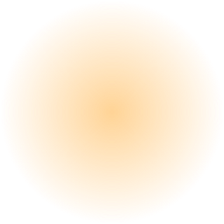

Lưu ý khi đọc
- Các nghiên cứu dưới đây thực hiện trên hoạt chất hoặc tổ hợp hoạt chất, không phải trên thành phẩm Dzentic.
- Dạng hoạt chất, nồng độ và công thức trong nghiên cứu có thể khác với sản phẩm Dzentic. Vì vậy, kết quả nghiên cứu không phải là kết quả của sản phẩm.
- Một số nghiên cứu được thực hiện trên người có tình trạng da cần chăm sóc y khoa. Việc liệt kê nhằm minh bạch cơ sở khoa học, không có nghĩa sản phẩm Dzentic có công dụng điều trị.
E0
Nghiên cứu trên thành phẩm Dzentic
Đang chờ cập nhật kết quả lâm sàng tại Bệnh viện Da liễu Hà Nội.
Chương trình
Trạng thái
Kết quả
Chương trìnhĐánh giá khả năng dung nạp và mức độ cải thiện khi dùng sản phẩm Dzentic trên người Việt Nam
Trạng tháiĐang hoàn thiện hồ sơ
Kết quảChưa có. Sẽ cập nhật sau khi đánh giá hoàn tất.
Chương trìnhKiểm nghiệm thành phẩm
Trạng tháiĐang cập nhật
Kết quả—
E1
Làm sáng da
5 nghiên cứu
Nghiên cứu
Hoạt chất · thiết kế · đối tượng
Kết quả chính
Mức bằng chứng · giới hạn
Kimball AB và cs. Br J Dermatol 2010;162(2):435–441
Hoạt chất · thiết kế · đối tượngNiacinamide 4% + N-acetyl glucosamine 2%. Ngẫu nhiên, mù đôi, đối chứng kem nền. 202 phụ nữ da trắng 40–60 tuổi, 8 tuần. Cả hai nhóm đều dùng kem chống nắng SPF 15.
Kết quả chínhNhóm hoạt chất cho kết quả tốt hơn kem nền trên cả bốn phương pháp đo sắc tố (p<0,05). 3,5% người tham gia có tác dụng không mong muốn liên quan đến sản phẩm.
Mức bằng chứng · giới hạnCấp 2 – trên người. Nghiên cứu diễn ra vào mùa xuân – hè: sắc tố tăng ở cả hai nhóm, nhóm hoạt chất tăng ít hơn. Nồng độ NAG cao hơn Dzentic (1%). Do Procter & Gamble tài trợ.
Hakozaki T và cs. Br J Dermatol 2002
Hoạt chất · thiết kế · đối tượngNiacinamide. Mô hình nuôi cấy chung tế bào hắc tố và tế bào sừng.
Kết quả chínhỨc chế 35–68% quá trình chuyển melanosome. Không ức chế hoạt tính tyrosinase trong điều kiện nghiên cứu.
Mức bằng chứng · giới hạnCấp 2 – phòng thí nghiệm. Các nghiên cứu sau này có kết quả không đồng nhất về tác động lên tyrosinase.
Sugimoto K và cs. Biol Pharm Bull 2004
Hoạt chất · thiết kế · đối tượngAlpha-arbutin. Tế bào hắc tố người và mô hình da tái tạo ba chiều.
Kết quả chínhTổng hợp melanin giảm còn 76% (tế bào nuôi cấy) và 40% (mô hình ba chiều) so với nhóm chứng. Không gây độc tế bào ở nồng độ dưới 1,0 mM.
Mức bằng chứng · giới hạnCấp 2 – phòng thí nghiệm. Nồng độ trong ống nghiệm không quy đổi trực tiếp sang nồng độ 1% trong sản phẩm.
Tài liệu kỹ thuật alpha-arbutin, DSM Personal Care, 2021
Hoạt chất · thiết kế · đối tượngAlpha-arbutin 1%. Hai nghiên cứu trên người: 80 phụ nữ trong 1 tháng; 26 phụ nữ có đốm nâu trong 3 tháng.
Kết quả chínhTỷ lệ cải thiện đốm nâu: 53,7% với alpha-arbutin so với 30,6% với beta-arbutin.
Mức bằng chứng · giới hạnCấp 2 – dữ liệu nhà cung cấp. Chưa đăng trên tạp chí bình duyệt. Không công bố giá trị p và phương pháp ngẫu nhiên hóa.
SCCS/1642/22 (Ủy ban Khoa học về An toàn Người tiêu dùng, EU), bản cuối 2023
Hoạt chất · thiết kế · đối tượngĐánh giá an toàn alpha-arbutin.
Kết quả chínhAn toàn đến 2% trong kem dùng cho mặt, với điều kiện hydroquinone tồn dư ở mức vết.
Mức bằng chứng · giới hạnĐánh giá an toàn của cơ quan khoa học.
E2
Chống oxy hóa
3 nghiên cứu
Nghiên cứu
Hoạt chất · thiết kế · đối tượng
Kết quả chính
Mức bằng chứng · giới hạn
Lin JY và cs. J Am Acad Dermatol 2003
Hoạt chất · thiết kế · đối tượngL-ascorbic acid 15% và α-tocopherol 1%, dùng riêng và phối hợp. Da lợn, chiếu tia mô phỏng ánh nắng.
Kết quả chínhMỗi vitamin dùng riêng cho mức bảo vệ gấp khoảng 2 lần kem nền. Phối hợp hai vitamin cho mức bảo vệ gấp khoảng 4 lần.
Mức bằng chứng · giới hạnCấp 2 – phòng thí nghiệm. Dạng vitamin và nồng độ khác với Photo Defense Serum (dạng ester, 0,2% và 0,1%). Kết quả là cơ sở cho nguyên lý phối hợp, không phải mức bảo vệ của sản phẩm.
Krusic PJ và cs. Science 1991
Hoạt chất · thiết kế · đối tượngFullerene C60. Thí nghiệm hóa học, đo bằng khối phổ.
Kết quả chínhMột phân tử C60 gắn được ít nhất 34 gốc methyl.
Mức bằng chứng · giới hạnCấp 1 – hóa học. Không phản ánh số gốc tự do được thu gom trên da người.
Inui S và cs. J Nanobiotechnology 2014;12:6
Hoạt chất · thiết kế · đối tượngLotion fullerene 1%. 10 phụ nữ Nhật Bản, nhãn mở, 8 tuần. Kèm thí nghiệm trên mô hình biểu bì.
Kết quả chínhSố lỗ chân lông thấy rõ trên ảnh chuẩn hóa giảm 17,6% (p<0,05).
Mức bằng chứng · giới hạnCấp 2 – trên người, bằng chứng thấp. Không có nhóm chứng, không làm mù, cỡ mẫu 10 người. Do công ty nguyên liệu tài trợ. Nồng độ cao hơn Photo Defense (0,1%).
E3
Bề mặt da
2 nghiên cứu
Nghiên cứu
Hoạt chất · thiết kế · đối tượng
Kết quả chính
Mức bằng chứng · giới hạn
Báo cáo tại Hội nghị AMWC Monaco 2025
Hoạt chất · thiết kế · đối tượngSo sánh HPR 0,2%, retinol 0,2% và retinal 0,2%. 42 người chia 3 nhóm, bôi mỗi tối trong 4 tuần.
Kết quả chính71% người dùng HPR nhận thấy da mịn hơn, so với 61% ở nhóm retinol và 69% ở nhóm retinal (tự đánh giá).
Mức bằng chứng · giới hạnCấp 2 – báo cáo hội nghị. Chưa phải bài báo bình duyệt đầy đủ, thời gian ngắn. Chỉ đăng khi có trích dẫn đầy đủ.
Dębowska và cs. Dermatology Review 2015
Hoạt chất · thiết kế · đối tượngMandelic acid 5% và 10%. 60 người, tiến cứu, 2 tháng.
Kết quả chínhGhi nhận cải thiện trên da dễ nổi mụn. Dung nạp tốt, không có ca bỏ cuộc.
Mức bằng chứng · giới hạnCấp 2 – trên người. Không có nhóm đối chứng kem nền.
E4
Peptide
2 nghiên cứu
Nghiên cứu
Hoạt chất · thiết kế · đối tượng
Kết quả chính
Mức bằng chứng · giới hạn
Wang Y và cs. Am J Clin Dermatol 2013;14(2):147–153
Hoạt chất · thiết kế · đối tượngAcetyl hexapeptide-8 10%. Ngẫu nhiên, mù đôi, đối chứng giả dược. 60 người Trung Quốc 25–60 tuổi, bôi quanh mắt trong 4 tuần.
Kết quả chính48,9% người dùng hoạt chất đạt hiệu quả giảm nhăn theo thang điểm, so với 0% ở nhóm giả dược. Các chỉ số độ nhám đo khách quan giảm có ý nghĩa (p<0,01).
Mức bằng chứng · giới hạnCấp 2 – trên người. Tác giả công bố không nhận tài trợ. Nồng độ cao gấp 20 lần NeoBright (0,5%). Thời gian ngắn, nhóm giả dược chỉ 15 người.
Dữ liệu nhà cung cấp Methylglucoside Phosphate (và) Copper Lysinate/Prolinate; trình bày lại trong bằng sáng chế Hoa Kỳ US10124030B2
Hoạt chất · thiết kế · đối tượngMảnh da người ngoài cơ thể (0,5%, 11 ngày). Thử nghiệm mù đôi có giả dược trên 20 người (1%, 15 ngày).
Kết quả chínhMảnh da: collagen I, collagen III và elastin tăng. Trên người: độ sâu nếp nhăn giảm 15%.
Mức bằng chứng · giới hạnCấp 2 – dữ liệu nhà cung cấp. Chưa đăng trên tạp chí bình duyệt. Hai tài liệu cùng dựa trên một bộ dữ liệu gốc, không phải hai bằng chứng độc lập.
E5
Giữ ẩm và lipid lớp sừng
4 nghiên cứu
Nghiên cứu
Hoạt chất · thiết kế · đối tượng
Kết quả chính
Mức bằng chứng · giới hạn
Man MQ và cs. J Invest Dermatol 1996
Hoạt chất · thiết kế · đối tượngHỗn hợp lipid lớp sừng (ceramide, cholesterol, acid béo). Mô hình da bị tổn thương hàng rào.
Kết quả chínhChỉ hỗn hợp đủ ba nhóm lipid mới cho quá trình phục hồi bình thường. Dùng một hoặc hai nhóm làm chậm phục hồi.
Mức bằng chứng · giới hạnCấp 2 – phòng thí nghiệm.
Zettersten EM và cs. J Am Acad Dermatol 1997
Hoạt chất · thiết kế · đối tượngHỗn hợp lipid ưu thế cholesterol. Da lão hóa, có nhánh trên 6 người (tuổi trung bình 80).
Kết quả chínhHàng rào da phục hồi nhanh hơn so với kem nền.
Mức bằng chứng · giới hạnCấp 2. Cỡ mẫu rất nhỏ.
Tanno O và cs. Br J Dermatol 2000
Hoạt chất · thiết kế · đối tượngNiacinamide 2%. So sánh với kem nền, 12 người, 4 tuần.
Kết quả chínhCeramide lớp sừng tăng 34%. Mất nước qua da thấp hơn kem nền 27%.
Mức bằng chứng · giới hạnCấp 2 – trên người. Cỡ mẫu nhỏ.
Camargo FB Jr và cs. J Cosmet Sci 2011
Hoạt chất · thiết kế · đối tượngPanthenol 1% và 5%. Mù đơn, đối chứng giả dược, 40 người, 30 ngày.
Kết quả chínhMất nước qua da giảm so với ban đầu và so với nhóm chứng (p<0,001).
Mức bằng chứng · giới hạnCấp 2 – trên người.
E6
Da dễ nổi mụn và làm sạch
3 nghiên cứu
Nghiên cứu
Hoạt chất · thiết kế · đối tượng
Kết quả chính
Mức bằng chứng · giới hạn
Draelos ZD và cs. J Cosmet Laser Ther 2006;8(2):96–101
Hoạt chất · thiết kế · đối tượngGel niacinamide 2% + panthenol 1%. Nhánh Nhật Bản: mù đôi, đối chứng giả dược, 100 phụ nữ, 4 tuần. Nhánh Hoa Kỳ: 30 phụ nữ.
Kết quả chínhNhánh Nhật: tốc độ tiết bã giảm 21,8% so với 10,7% ở nhóm giả dược tại tuần 4 (p=0,027). Nhánh Hoa Kỳ: chỉ số đo bằng thiết bị không khác biệt có ý nghĩa.
Mức bằng chứng · giới hạnCấp 2 – trên người. Do Procter & Gamble tài trợ. Công thức nghiên cứu có thêm panthenol.
Korting HC và cs. Infection 1995
Hoạt chất · thiết kế · đối tượngChất làm sạch tổng hợp pH acid so với xà phòng. 120 người có mụn mức nhẹ, 3 tháng.
Kết quả chínhNhóm dùng chất làm sạch tổng hợp có ít triệu chứng kích ứng hơn (1,8% so với 40,4%).
Mức bằng chứng · giới hạnCấp 2 – trên người. Nghiên cứu về nhóm chất làm sạch, không phải công thức Purifying Cleansing Gel.
Mijaljica D và cs. Molecules 2022
Hoạt chất · thiết kế · đối tượngTổng quan, có dữ liệu kính hiển vi điện tử.
Kết quả chínhXà phòng pH kiềm gây biến đổi protein và lipid lớp sừng sau nhiều lần rửa. Chất làm sạch tổng hợp pH 5,5–7 ít gây biến đổi hơn.
Mức bằng chứng · giới hạnTổng quan.
E7
Chống nắng
1 nghiên cứu
Nghiên cứu
Hoạt chất · thiết kế · đối tượng
Kết quả chính
Mức bằng chứng · giới hạn
Hughes MCB và cs. Ann Intern Med 2013
Hoạt chất · thiết kế · đối tượngDùng kem chống nắng hằng ngày so với dùng tùy ý. Thử nghiệm ngẫu nhiên cộng đồng, 903 người, 4,5 năm.
Kết quả chínhNhóm dùng hằng ngày có khả năng tiến triển lão hóa da do ánh nắng thấp hơn 24% (OR 0,76; p=0,033).
Mức bằng chứng · giới hạnCấp 2 – trên người, chất lượng cao. Đánh giá thói quen chống nắng nói chung, không riêng sản phẩm hay bộ lọc cụ thể.
E8
Các nghiên cứu đặc biệt
14 nghiên cứu
Các nghiên cứu dưới đây được thực hiện trong bối cảnh y khoa hoặc so sánh với thuốc. Chúng được cung cấp để chuyên gia đánh giá cơ sở lựa chọn hoạt chất, không nhằm so sánh sản phẩm Dzentic với thuốc.
Nghiên cứu
Thiết kế · đối tượng
Kết quả chính
Giới hạn
Từ bằng chứng
đến công thức
Xem cách từng hoạt chất được lựa chọn, phối hợp và đặt đúng nồng độ trong công thức Dzentic.

Bệnh viện Da liễu Hà Nội
Kết quả đánh giá lâm sàng đang được hoàn thiện và sẽ được công bố tại đây.